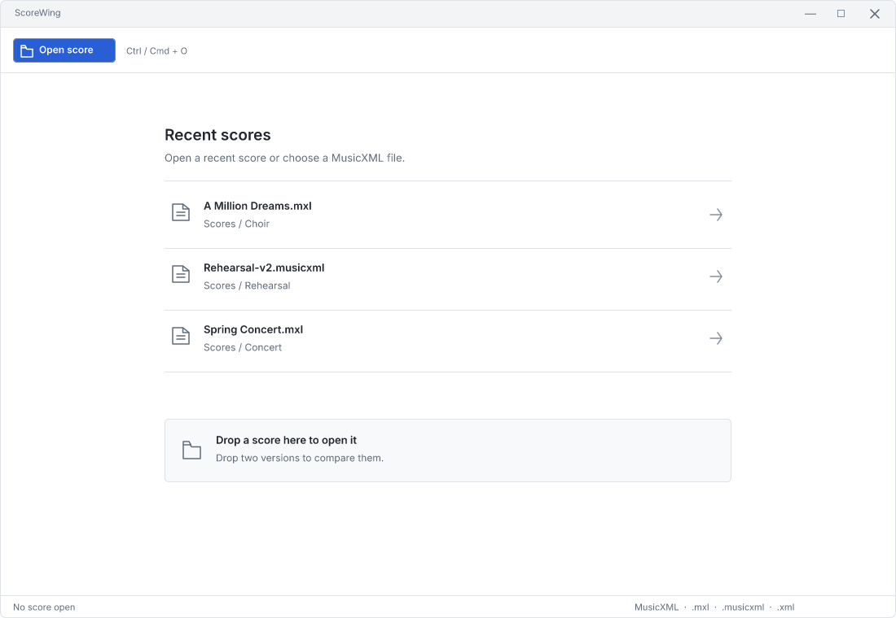
Start
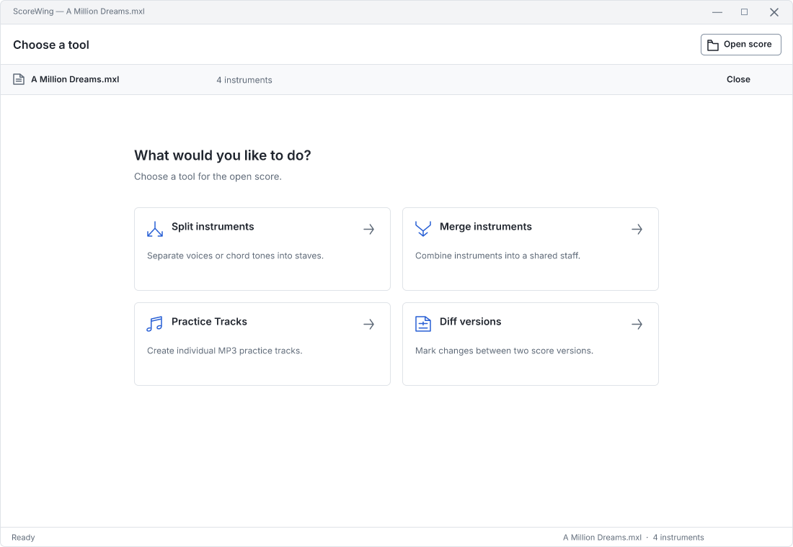
Tool chooser
 Split instruments
Split instruments
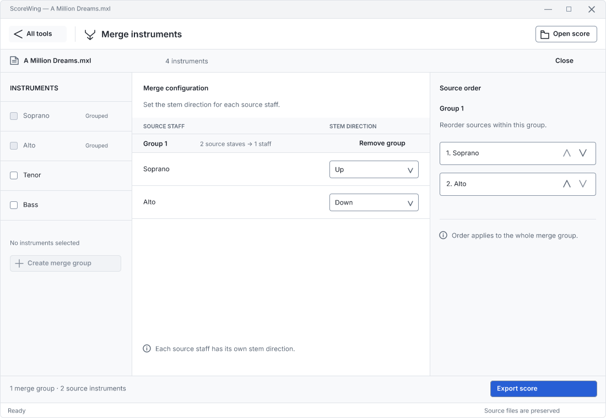
Merge instruments
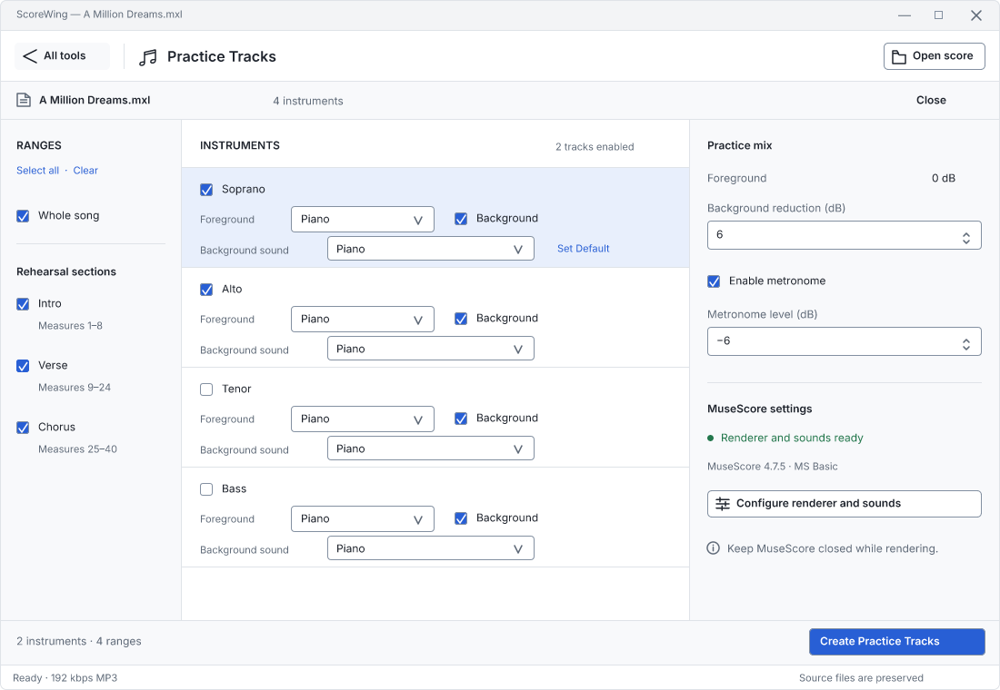
Practice Tracks
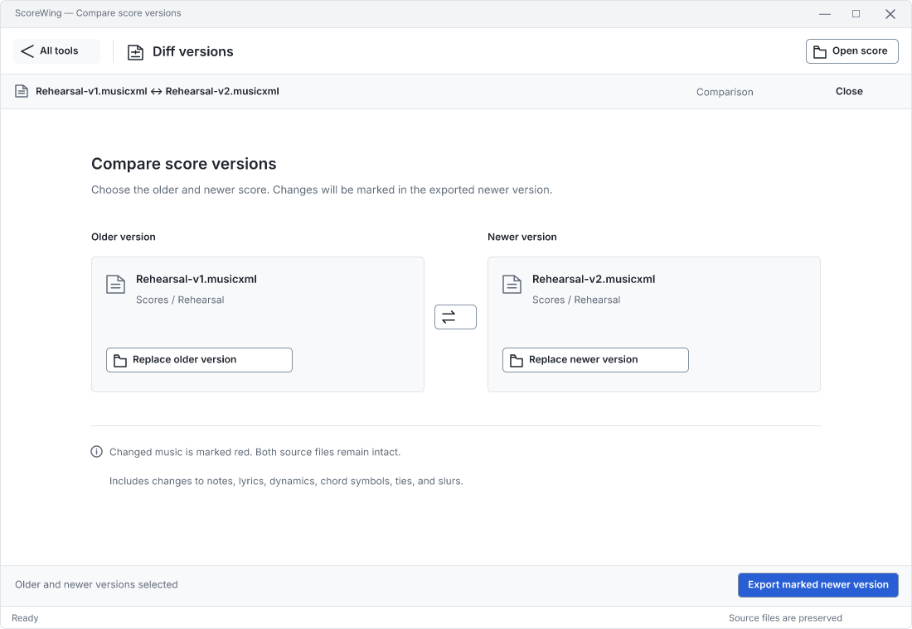
Diff versions
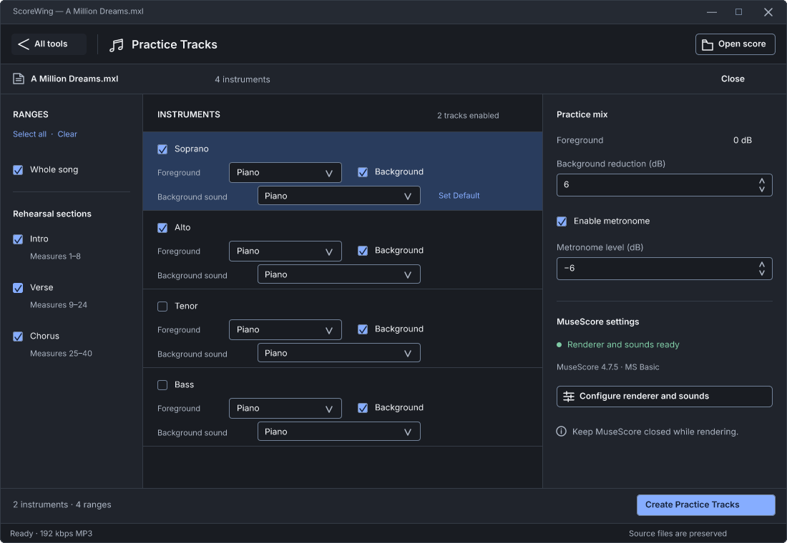
Practice Tracks · Dark
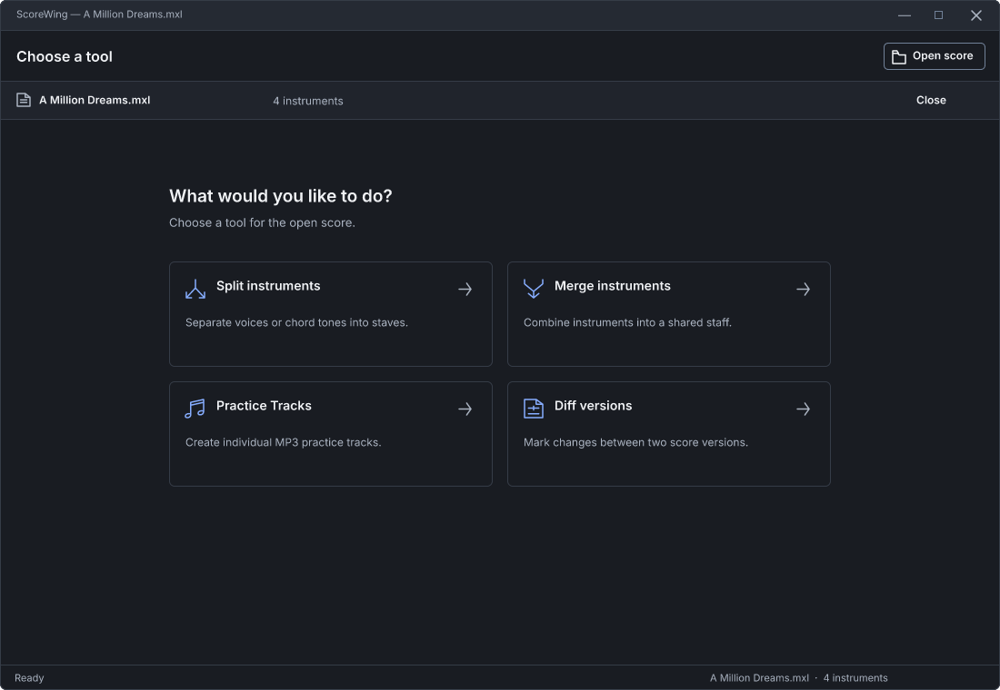
Tool chooser · Dark
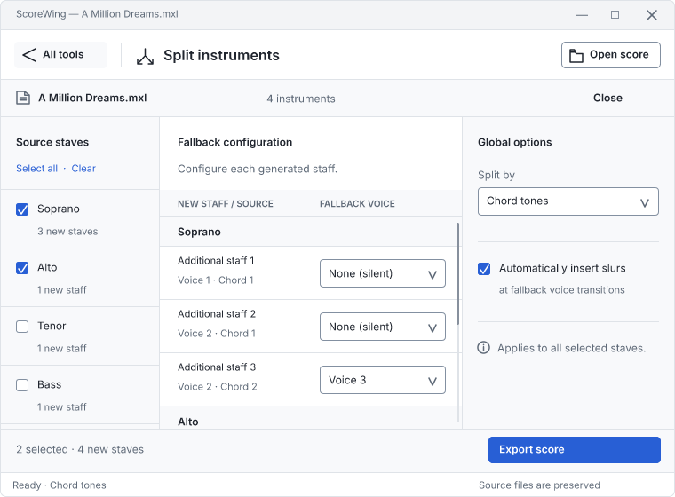
Split · Minimum window
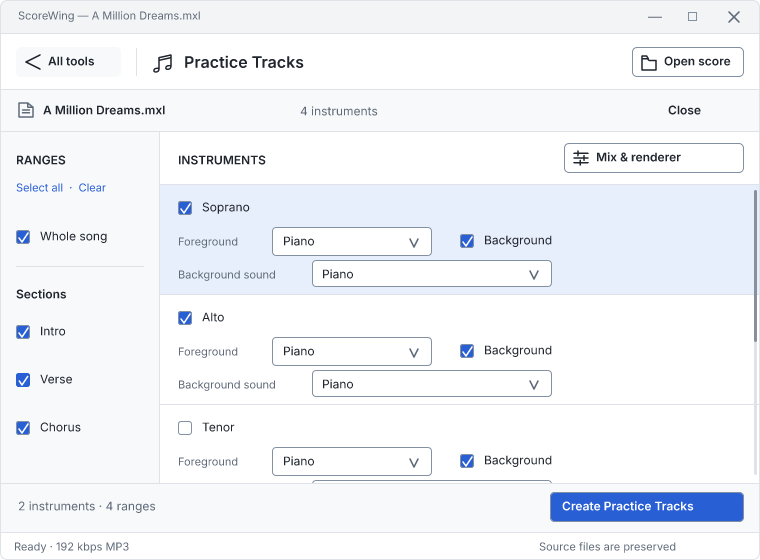
Practice · Minimum window
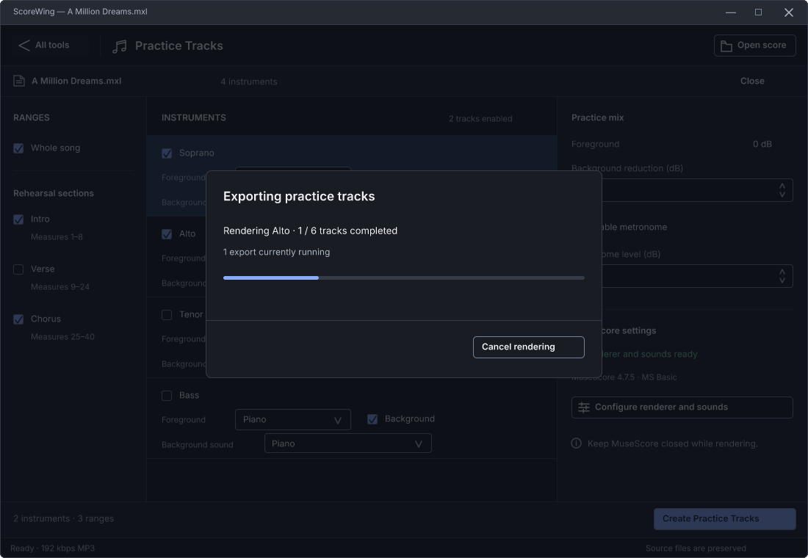
Export progress
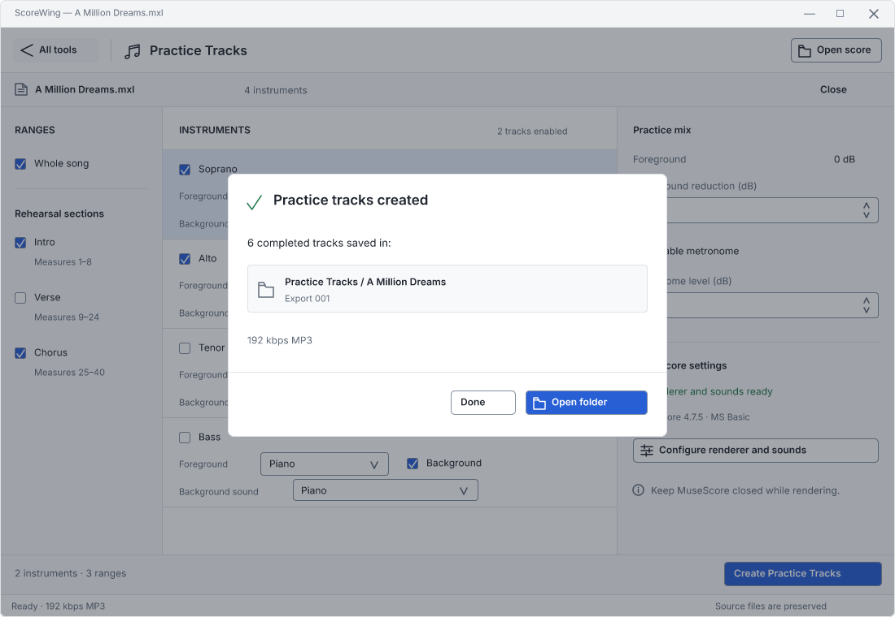
Export complete
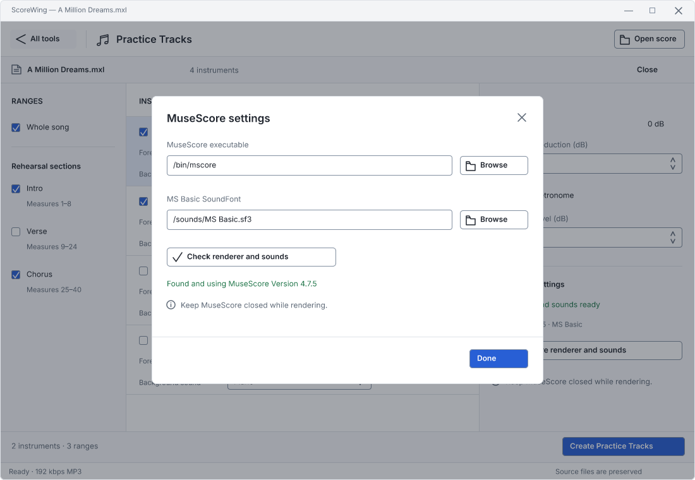
Renderer settings
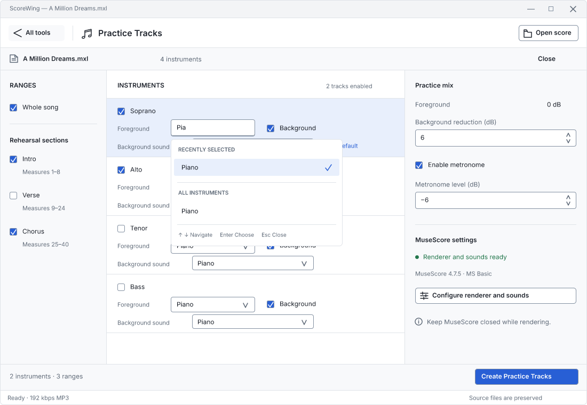
Sound search
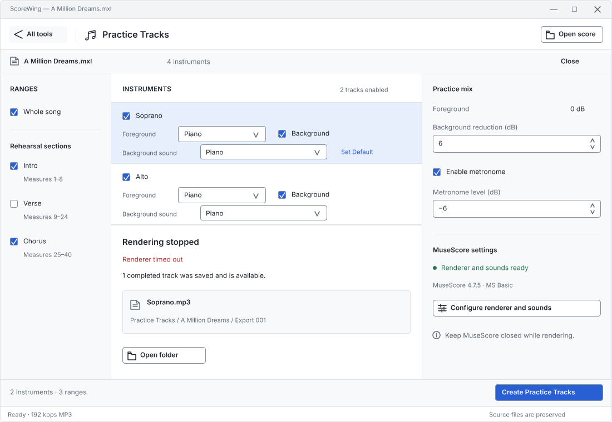
Partial export
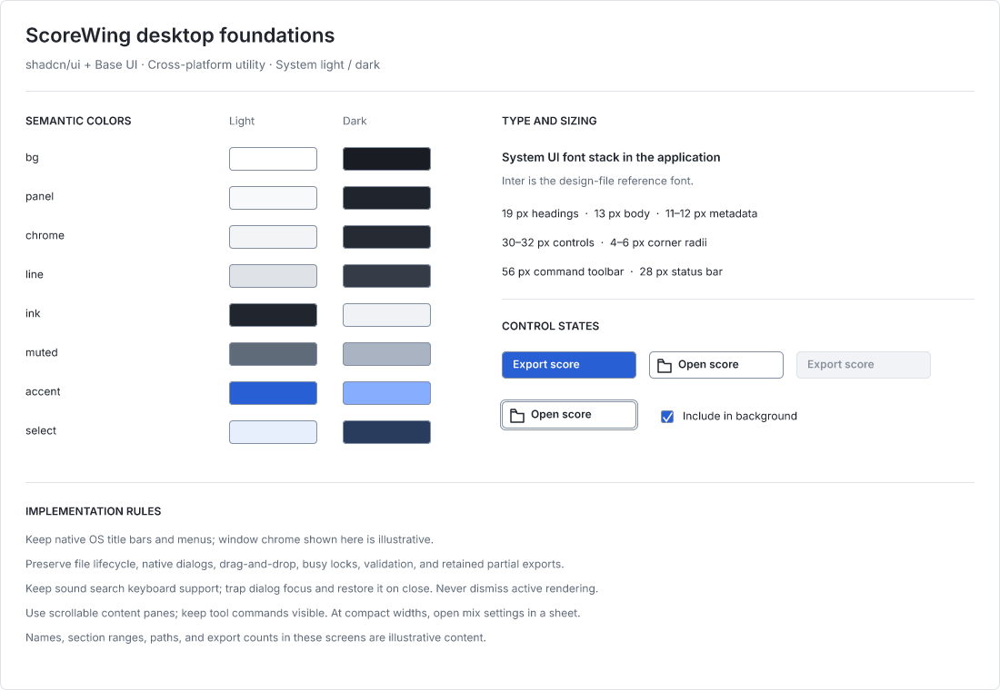
Design foundations
Figcraft design review · Illustrative score data · Native window chrome varies by operating system · Application implementation follows design review.